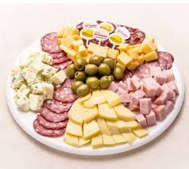

¿Que ofrecemos?
Somos de elegir nuesta mercaderia acorde a las necesidades de los clientes.
Nuestro objetivo es que los clientes se lleven lo que vienen a buscar, pero lo mas importante, es que el cliente se quede
para siempre con nosotros y cada dia nos elija mas!!!
Quesos de campo
Queso sardo argentino de campo

Queso holanda

Queso fontina

Embutidos
Jamon cocido premium

Bondiola

Salame

Jamon crudo

Quesos frescos
Cremoso

Crema de leche

Queso barra

Picadas

¿Que lleva la picada, para que se vea tentadora?
- Queso
- Jamon
- Salame
- Mortadela
- Jamon crudo
- Bondiola
- Salame cantimpalo
- Queso roquefort
- Aceitunas verdes y negras